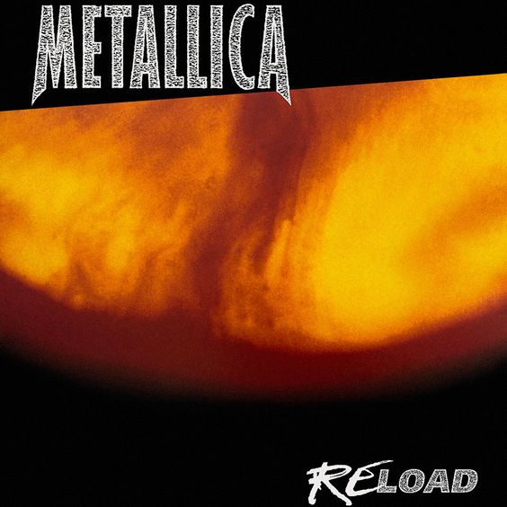
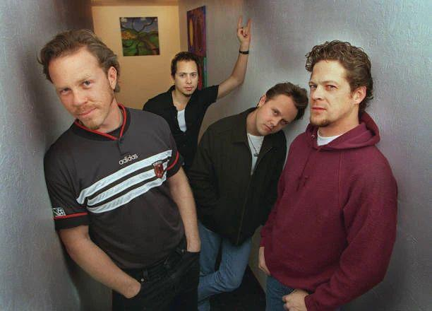
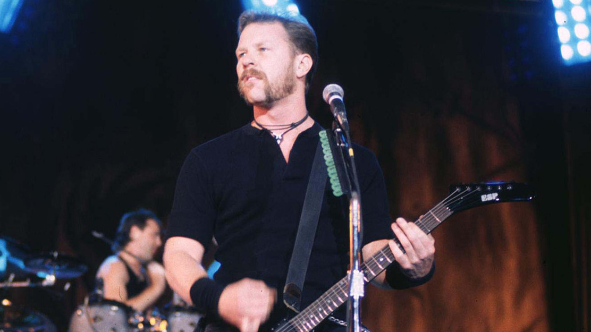
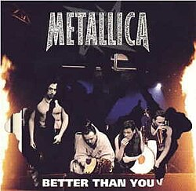

A Better Than You a Metallica 1997-es Reload albumának egyik dala. A szám a zenekar kilencvenes évekbeli korszakának jellegzetes hangzását képviseli, amely a hagyományos thrash metal elemeket hard rock hatásokkal ötvözte.
A dal energikus gitártémáira, egyszerű, mégis erőteljes riffjeire és James Hetfield karakteres énekére épül. Bár nem tartozik a legismertebb Metallica-slágerek közé, a rajongók körében népszerű koncertdalnak számított.
A Better Than You 1999-ben elnyerte a Best Metal Performance Grammy-díjat. Ez volt a Metallica harmadik Grammy-győzelme, amely tovább növelte a zenekar szakmai elismertségét.
A díj azért is figyelemre méltó, mert a Reload album megosztotta a rajongókat. Egyesek üdvözölték az új zenei irányt, míg mások a korábbi, keményebb hangzás visszatérését várták. A Grammy azonban bizonyította, hogy a zenekar új korszakát a szakma is értékelte.
A Better Than You ugyan nem vált olyan ikonikus számmá, mint a One vagy az Enter Sandman, de Grammy-díja fontos része a Metallica történetének, és jól mutatja a zenekar sikeres alkalmazkodását a kilencvenes évek változó zenei környezetéhez.



